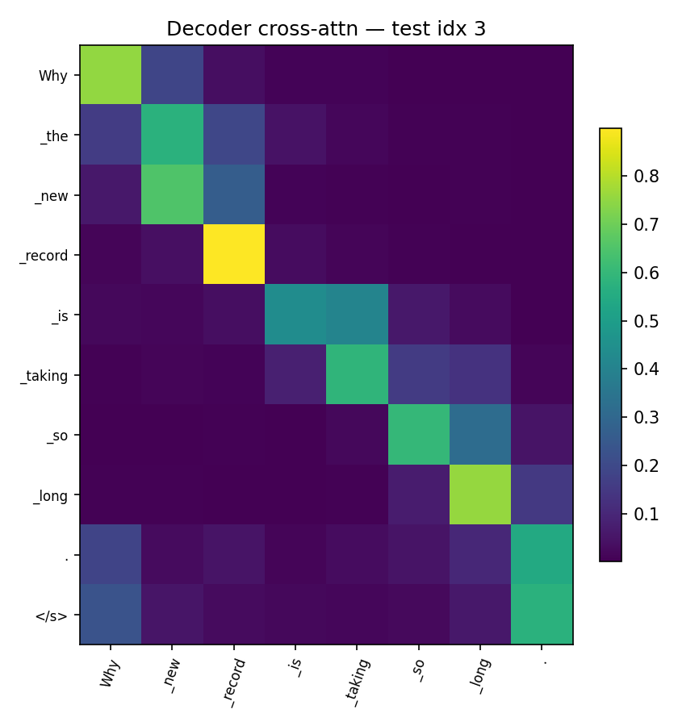
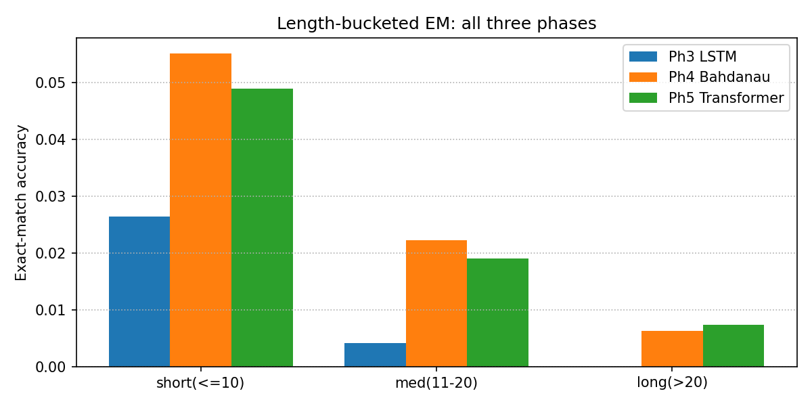

Grammatical Error Correction
on the C4_200M Dataset
Bag-of-Words → LSTM → Attention → Transformer
Abdullah Ahmed (202200206) · Ibrahim Hanafy (202200518)
CIE 555 — Neural Networks and Deep Learning
Instructor: Dr. Ibrahim Swelam · TAs: Aya Abdelaziz, Mahmoud Farahat
The Problem: GEC
Rewrite an ungrammatical sentence into its corrected form.
Output (corrected): "She went to school yesterday and learned many things."
- Errors: tense, agreement, articles, plurals, punctuation, spelling.
- Output is a whole new sentence — a sequence-to-sequence task.
The Data: C4_200M Subset
Clean web text automatically corrupted into (corrupted, clean) pairs.
| Split | Pairs |
|---|---|
| Train | 850,000 |
| Validation | 50,000 |
| Test | 100,000 |
| Total | 1,000,000 |
- 16k Byte-Level BPE tokenizer.
- Max length 64 tokens.
- Same splits + tokenizer for every model — no leakage.
Four Models of Increasing Power
| # | Model | What it adds |
|---|---|---|
| 1 | Bag-of-Words (TF-IDF) | Baseline — only detects errors |
| 2 | LSTM encoder–decoder | First corrector; fixed-size bottleneck |
| 3 | LSTM + Bahdanau attention | Decoder re-queries the full source |
| 4 | Transformer | Self-attention; no recurrence |
Model 1 detects. Models 2–4 correct.
Model 1 — Bag-of-Words Baseline
TF-IDF (unigrams+bigrams, 50k vocab) + Logistic Regression / Linear SVM. Each pair → corrupted = 0, clean = 1.
- Detector, not corrector — outputs one label, never corrected text.
- Bag-of-words discards order — but grammar is order ("she goes" vs "go she").
- Error signal swamped — a 1-word error is invisible next to content-word weights.
- No generalisation — only memorises lexical statistics.
→ Proves GEC needs sequence modelling + generation.
Model 2 — LSTM Encoder–Decoder
- BiLSTM encoder compresses input into one 512-dim state.
- LSTM decoder generates token by token.
- Teacher forcing 1.0→0.5; 19.55M params; 3 epochs.
Test GLEU 0.213 (greedy) — weakest corrector.
Model 3 — LSTM + Bahdanau Attention
Keep all encoder states; the decoder attends to them every step.
score(s,h) = vᵀ·tanh(W·s + W·h) → α = softmax(score) → context = Σ αᵢ·hᵢ
- Removes the bottleneck; alignment weights are interpretable.
- Padding masked with −∞ before softmax. 29.06M params.
Model 4 — Transformer
- No recurrence — self-attention only.
- d_model 256, 8 heads, 3+3 layers, FFN 512.
- Sinusoidal positional encoding; causal decoder mask.
- Label smoothing 0.1; warmup LR; weight tying.
Self-attention: every token directly attends to every other — O(1) path length, fully parallel.
Comparative Results — Test Set
| Model | Decoding | Params | EM | GLEU |
|---|---|---|---|---|
| LSTM (no attention) | greedy | 19.55M | ≈0.008 | 0.213 |
| LSTM (no attention) | beam-4 | 19.55M | — | 0.256 |
| LSTM + Bahdanau | greedy | 29.06M | 0.024 | 0.599 |
| LSTM + Bahdanau | beam-4 | 29.06M | 0.026 | 0.618 |
| Transformer | greedy | 8.05M | 0.022 | 0.618 |
| Transformer | beam-4 | 8.05M | 0.020 | 0.618 |
- Beam search helps the LSTM, not the (well-calibrated) Transformer.
- Transformer ties Model 3 on GLEU with 3.6× fewer parameters.
Attention Is Interpretable

Bahdanau decoder alignment

Transformer encoder self-attention

Transformer decoder cross-attention
Bahdanau (left) & Transformer cross-attention (right) learn visually similar source-to-output alignments.
Behaviour by Sentence Length

- Bottleneck LSTM (blue) collapses to ≈0 on medium/long sentences.
- Bahdanau & Transformer stay non-zero — attention prevents the collapse.
- Crossover: Transformer (green) overtakes Bahdanau (orange) on the long bucket — its O(1) path helps most there.
Worked Example — The Three Correctors
Short sentence (insert a missing article):
SRC : Why new record is taking so long. REF : Why the new record is taking so long. P3 : Why new record is taking so long. LSTM - no edit (copies) P4 : Why a new record is taking so long. Bahd. - inserts article "a" P5 : Why new record is taking so long? Trans.- "." -> "?"
Long, noisy sentence:
P3 : "...cpue to buy and/indukine stead..." hallucinated nonsense P4 : copies source, corrupts the URL P5 : copies source, fixes "got" -> "get" the one real fix
LSTM collapses on long input; P4 & P5 differ by 1–2 tokens.
Why Bahdanau LSTM ≈ Transformer
Test GLEU tied at 0.618. The Transformer matches, not beats:
- Decisive feature is shared — both have full source access via attention (the +0.386 jump). LSTM-vs-self-attention is second-order.
- Both hit the data ceiling — same budget, same noisy C4_200M references → both converge to GLEU ≈ 0.62.
- Sentences are mostly short — the O(1) path only helps long-range deps (see the crossover).
- On hard inputs both just copy — outputs differ by 1–2 tokens.
Grammar-Rule Analysis of Outputs
Learned well (local syntax):
- Subject–verb agreement: "What are this job" → "What is this job"
- Articles: "Why new record" → "Why the new record"
- Verb tense, punctuation, spacing.
Still hard:
- Long-range / semantic edits; rare-word spelling (hallucination).
- Dominant failure = under-correction — copying the source unchanged.
Final Challenge — Dataset Quality
Why does every model score only ~2% exact match?
1. References are paraphrases: "informed"→"suggest", "startups"→"start-ups" — not grammar errors.
2. References can be noisy: target "no brain worky" — not a word.
3. Many valid corrections exist; EM credits exactly one.
→ Report GLEU / F0.5, not EM. Cleaner data helps more than a bigger model.
Conclusion
- BoW detects grammaticality at ~62% — cannot correct.
- LSTM corrects but is limited by the bottleneck (GLEU 0.213).
- Bahdanau attention is the decisive jump (GLEU 0.599).
- Transformer ties on GLEU (0.618) with 3.6× fewer params, best validation GLEU (0.613).
Thank You
Questions?